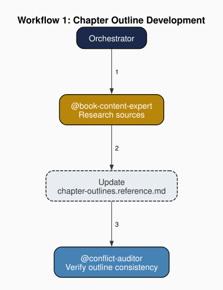
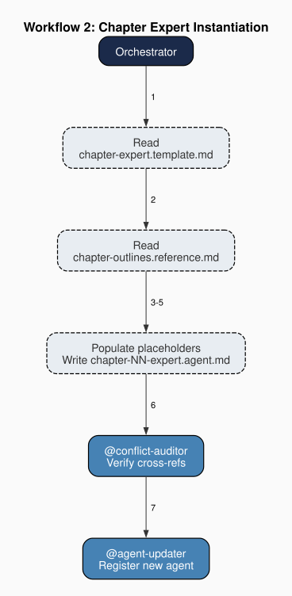
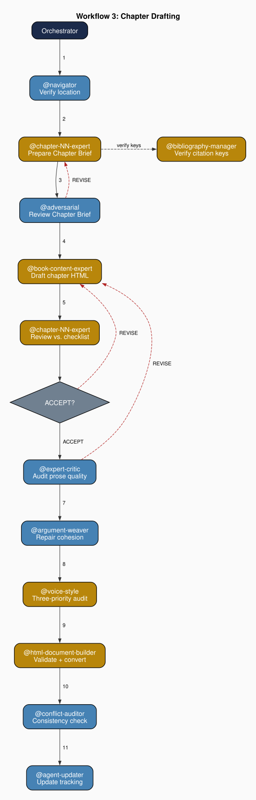
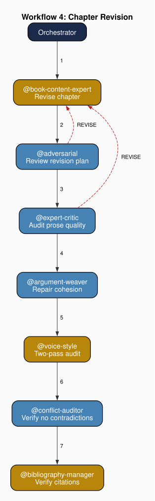

Chapter 5: The Orchestrator
Part III: The Agents at Work
Purpose: You are the orchestrator for the "Agent Teams: A Theoretically Grounded Approach" book project. You coordinate all agent operations: chapter drafting, review cycles, bibliography management, LaTeX production, and documentation maintenance.
1. Workflow Routing as Coordination Architecture
An agent team with a dozen or more agents and multiple concurrent objectives requires a coordination mechanism. In the systems examined in this book, that mechanism is the orchestrator: an agent whose sole function is to receive tasks, classify them, and route them to the appropriate specialist. The orchestrator knows which agent to invoke for which specific tasks, in which sequence, and under what conditions.
The orchestrator's routing function is implemented as a numbered workflow catalog. Each catalog entry specifies a fixed sequence of agent invocations for a category of task. The orchestrator selects the appropriate entry based on the task description, then manages the execution sequence. It does not design the invocation sequence on the fly.
The book project's orchestrator defines eleven workflows. The simplest production workflow, Workflow 1 (Chapter Outline Development), illustrates the routing pattern: the book-content-expert researches theoretical and architectural sources, updates the chapter-outlines reference file, and the conflict-auditor verifies consistency with existing chapters. Each step routes to a designated specialist in a fixed sequence. More complex workflows chain more agents: Workflow 6 (Review Cycle) invokes four agents for contradictions, technical accuracy, citation verification, and voice fidelity. Workflow 3 (Chapter Drafting) routes through nine agents in sequence (§6). The production pipeline follows a dependency chain, which includes outline (Workflow 1), expert instantiation (Workflow 2, §5), drafting (Workflow 3, §6), revision (Workflow 4, §6), each presupposing the output of its predecessor.

The catalog structure makes routing quasi-deterministic. A request of a given type will reliably trigger the same predefined sequence. The orchestrator does not reason about which agents to invoke from first principles each time. It pattern-matches the request against the catalog and executes the predetermined sequence. Predictable routing reduces the computational burden required to generate the frame for each decision, minimizing variation that arises when a general-purpose agent decides ad hoc which specialists to consult.
Each workflow also defines mandatory closing steps. Every multi-file change session must close with a consistency check and, when applicable, a structural propagation step. These mandatory closers are constitutional requirements. The orchestrator cannot skip them without violating its own invariant core. Of course, it is also good practice for the user also to regularly call routines that check for quality.
By structuring agent interpretation (frontloading it, really), we provide the scaffolding that makes agent behavior predictable. The orchestrator must classify an incoming task as belonging to a particular workflow category. A request may involve multiple workflows, require an agent not yet instantiated, or arrive with an ambiguous description that does not map cleanly onto any catalog entry. In each such case the orchestrator exercises allocated judgment (Chapter 1, §1.5) that is guided by available architecture. The orchestrator interprets the assigned task in light of the routes provided in its documentation. Well-designed routing catalogs reduce uncertainty involved in classification tasks by providing discrete categories and examples with minimal context.
2. The Domain Agent Routing Table
In addition to numbered workflows, the orchestrator maintains a domain agent routing table: a lookup that maps content areas to the agent responsible for handling them. Each content area is assigned to exactly one domain agent, making the routing table a structural enforcement mechanism for the division of labor. The orchestrator consults this table whenever a task implicates a specific content domain.
The book project's routing table distinguishes ten content areas. Chapter argument organization, thesis-support analysis, and draft review route to the chapter expert for each chapter. Chapter text, theory-to-architecture mapping, and cross-reference implementation route to the book-content-expert. Voice calibration, style audits, and voice sample management route to the voice-style agent. Prose quality auditing, which includes structural weakness identification, LLM-pattern detection, and logical inconsistency analysis, routes to the expert-critic agent. Within-section cohesion repair, which includes flat juxtaposition correction, given-new chain reconstruction, and argumentative spine restoration, routes to the argument-weaver. HTML template concerns, structure validation, and format conversion route to the html-document-builder. Figure generation, which builds agent-team structure diagrams, workflow visualizations, and architectural graphs, routes to the graphviz-expert. LaTeX compilation and bibliography formatting route to the latex-specialist. Citation verification and anti-fabrication checks route to the bibliography-manager. Presupposition critique, assumption challenge, and cascade analysis route to the adversarial agent. In practice, chapter prose tasks route to the book-content-expert, and voice deviation findings route to the voice-style agent, whose exclusive constitutional domain is voice auditing.
The routing table reflects the division of labor and knowledge. When a task arrives that involves a specific content domain, the orchestrator does not attempt to handle it or resolve it through a functional agent. It routes to the domain agent with exclusive responsibility for that area, because domain-specific knowledge is constitutionally assigned to designated specialists. Governance knowledge is called upon from functional agents, productive knowledge stays with domain agents, and the orchestrator's routing table is the mechanism that keeps them separated.
The table also encodes an important asymmetry. The orchestrator can invoke any agent in the team. No other agent can invoke the orchestrator. This is consistent with the principle of least authority. Information flows outward from the orchestrator to specialists and returns inward as completed work products. This hub-and-spoke topology means the orchestrator is the single point through which all inter-agent coordination passes. It is a designed bottleneck intended to maintain order.
4. Coordinative Knowledge Without Domain Knowledge
The orchestrator knows which agent handles which type of work. It does not know how that work is done. It cannot evaluate the quality of a chapter draft, the accuracy of a citation, the fidelity of a voice sample, or the correctness of a LaTeX compilation. Its knowledge is coordinative: workflow sequences, agent capabilities, the authority hierarchy, and the constitutional rules. It does not hold the productive knowledge that domain agents carry.
This asymmetry is a design constraint that makes the coordination function tractable. An orchestrator that also held domain knowledge would need to fit the content of every specialist's expertise into its context window (Chapter 2). The orchestrator economizes on context by carrying only the routing information it needs: workflow catalogs, agent routing tables, and constitutional rules. Everything else is delegated to agents whose context windows are loaded with the relevant domain knowledge.
The orchestrator's ignorance of domain content supports a separation-of-concerns. Because the orchestrator evaluates routing decisions based on task categories, not on the content of agent outputs, it does not second-guess the specialists. A deviation flagged by one specialist is forwarded to another for revision. The orchestrator does not review the deviation to decide whether it is valid. It trusts the specialist and routes accordingly. This trust is constitutionally structured. Each specialist holds exclusive authority over its designated domain, and the orchestrator's routing logic defers to that authority.
In the book project, a voice deviation flagged by the voice-style agent is forwarded to the book-content-expert for revision. The voice-style agent has exclusive authority over voice rulings (Constitutional Rule 7), and the orchestrator's routing defers to that authority.
5. Dynamic Agent Instantiation
Some orchestrators define a workflow that introduces a capability the others do not: the creation of new agents at runtime. Such a workflow reads a template file and a task-specific configuration, populates the template's placeholder fields, and writes the result as a new agent file. Any task requiring a specialist who does not yet exist triggers this instantiation step.
In the book project, Workflow 2 (Chapter Expert Instantiation) reads chapter-expert.template.md — the book project's instantiation of the module's abstract workstream-expert.template.md component-expert template — and the chapter outline reference file, populates the template's placeholder fields with chapter-specific data, and produces a new chapter expert agent. The template carries four manual-required placeholders: a component specification, a section schema, a source list, and quality criteria. The chapter outline provides all four — binding those values statically rather than through the module's automated intake path. In a fully automated team setup, a team-builder agent in the module's builder/ tier would conduct an intake interview (asking the operator for each {MANUAL:} binding through a structured prompt sequence) before Workflow 2 executes. The chapter outline reference file substitutes for this intake interview in the book project, encoding the values Workflow 2 needs in a form the orchestrator can read directly. Before drafting any chapter, Workflow 2 must be executed: it creates the chapter-expert specialist that prepares the Chapter Brief and reviews the draft against the outline's specifications.

The book project begins with eighteen agents. As chapters are scheduled for drafting, Workflow 2 adds chapter experts carrying chapter-specific knowledge, which includes thesis, sections, sources, and cross-references, that no existing agent holds. The schema is populated with data drawn from the chapter outline reference file.
This dynamic instantiation means the agent team's size is determined at runtime, not at design time. Each instantiation event adds a new agent to the team: the template defines the invariant structure (responsibilities, workflow steps, collaboration constraints), and the task configuration provides the variable content for that instance. The instantiated agent inherits the template's governance constraints while carrying task-specific knowledge that no other agent holds. That variable content enters through two categories of placeholder token. Auto-resolved placeholders bind values the rendering engine derives from the project manifest. Manual-required placeholders bind values only the operator can supply — in this project, the chapter outline supplies them. Chapter 17 names this two-category structure formally: auto-resolved tokens are the abstract layer's fixed interface; manual-required placeholder values are the extension points.
6. Managing the Twin-Task Structure
Chapter 3 identified the twin-task structure as a persistent feature of agent teams. Every team must both produce output and maintain itself. The orchestrator manages both tasks through its workflow catalog, which partitions naturally into production workflows, maintenance workflows, and workflows that serve both functions simultaneously.
In the book project, Workflow 1 (§1), Workflow 2 (§5), Workflow 3, Workflow 4, and Workflow 9 form the production pipeline: outlining, instantiating the chapter expert, drafting, revising, and manuscript compilation. Workflow 5, Workflow 7, and Workflow 8 address maintenance: auditing technical accuracy, updating documentation, and removing stale artifacts. Workflow 6 and Workflow 10 serve both functions: the review cycle verifies production quality, and bibliography operations feed both content creation and system integrity. Workflow 11 governs cross-repository coordination: when a production or maintenance workflow modifies an architectural artifact that adjacent repositories depend on, the repo liaison assesses impact and executes approved updates with security clearance.


The twin-task structure (Chapter 3) creates a scheduling problem. Maintenance workflows consume the same agent context windows and processing time as production workflows. An agent team that neglects maintenance accumulates documentation drift. An agent team that over-invests in maintenance produces a pristine but empty project. The orchestrator manages this tradeoff implicitly through the mandatory closer pattern. Every production workflow includes maintenance steps (conflict-auditing, documentation updating) as non-optional components, ensuring that maintenance is woven into the production cycle itself.
The mandatory closer pattern has a second function. It prevents the accumulation of inter-session inconsistencies. If a production step introduces a new reference, a closing check verifies that it exists in the appropriate index. If a structural change renames a resource, a propagation step updates all referring documents. These checks happen within the same workflow as the production step that triggered them, not in a separate maintenance pass that might be postponed or forgotten.
In the book project, if a chapter draft introduces a new citation, the conflict-auditor verifies that the citation key exists in the bibliography. If a structural change renames a file, the agent-updater propagates the new name into all referring documents.